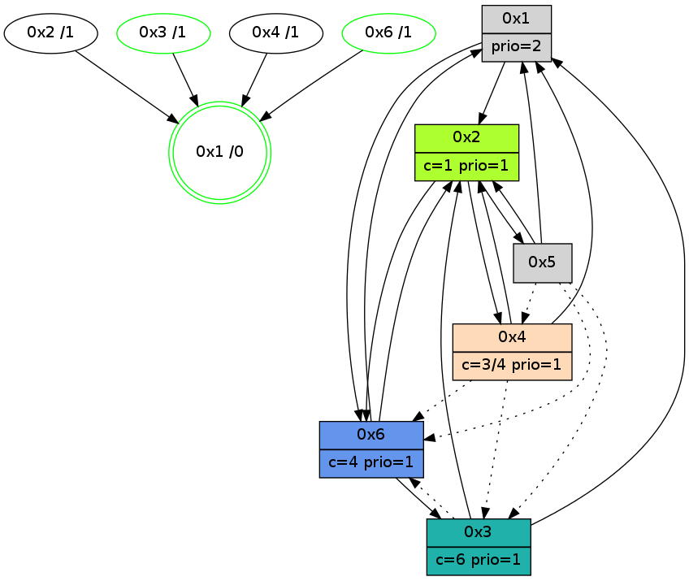

>> << IDX [start] -100 -25 -5 +0 +5 +25 +100 [860.354722977]
 Previous packets
855.004025 [Color(6) seq=85 @0:0 color=4 prio=1 c=0,1,2,5,6;3]
855.005485 [Color(1) seq=85 @0:0 prio=2 c=1;0,2,3,4,5,6]
855.007778 [Color(3) seq=55 @0:0 color=6 prio=1 c=1,3,4,5;0,2]
----------------------------------------------------------------------
855.433635 beacon01(adaf) #0 coord=01,02,05,03,04,06 cycle=432.0ms assoc
-- color-indic=1 64 d5 b1
855.443596 beacon02(adaf) #0 coord=01,02,05,03,04,06 cycle=432.0ms assoc 64 84 4e
855.453596 beacon05(adaf) #0 coord=01,02,05,03,04,06 cycle=432.0ms assoc 64 22 64
855.463596 beacon03(adaf) #0 coord=01,02,05,03,04,06 cycle=432.0ms assoc 64 be 40
855.473597 beacon04(adaf) #0 coord=01,02,05,03,04,06 cycle=432.0ms assoc 64 18 6a
855.483598 beacon06(adaf) #0 coord=01,02,05,03,04,06 cycle=432.0ms assoc 64 6c 76
855.495295 [Hello(4): seq=660 sym=2,1 asym=3 sysInfo=hasWarning stat=2:13,7,12,2/1:11,2,7,0/3:1,8,13,3]
855.499022 [Hello(6): seq=573 sym=1,2 sysInfo=hasWarning,coloring-mode-on,ColoringModeIndicationCalled stat=1:13,3,8,1/2:8,9,0,0]
855.502251 [Hello(2): seq=1148 sym=6,4,5 sysInfo=hasWarning,coloring-mode-on,ColoringModeIndicationCalled stat=6:4,10,15,4/4:8,3,12,2/5:0,0,0,1]
855.505285 [Color(2) seq=84 @0:0 color=1 prio=1 c=0,2,3,4,5,6]
855.508440 [Hello(1): seq=559 sym=2,6,5 sysInfo=hasWarning,coloring-mode-on,ColoringModeRequestCalled stat=2:1,4,1,0/6:1,0,2,2/5:0,0,0,1]
855.511769 [STC(1) #0.88 new-neigh,tree-change,inconsistent-stability,stable,to-color d=0]
----------------------------------------------------------------------
855.925745 beacon01(adaf) #0 coord=01,02,05,03,04,06 cycle=432.0ms assoc
-- color-indic=1 64 11 de
855.935705 beacon02(adaf) #0 coord=01,02,05,03,04,06 cycle=432.0ms assoc 64 40 21
855.945705 beacon05(adaf) #0 coord=01,02,05,03,04,06 cycle=432.0ms assoc 64 e6 0b
855.955706 beacon03(adaf) #0 coord=01,02,05,03,04,06 cycle=432.0ms assoc 64 7a 2f
855.965706 beacon04(adaf) #0 coord=01,02,05,03,04,06 cycle=432.0ms assoc 64 dc 05
855.975707 beacon06(adaf) #0 coord=01,02,05,03,04,06 cycle=432.0ms assoc 64 a8 19
855.987266 [STC(4)->1 #0.88 new-neigh,tree-change,inconsistent-stability,to-color d=1]
855.989356 [STC(3)->1 #0.88 new-neigh,tree-change,inconsistent-stability,stable,to-color d=1]
855.991078 [Color(1) seq=86 @0:0 prio=2 c=1,6;0,2,3,4,5]
855.993686 [Color(3) seq=56 @0:0 color=6 prio=1 c=1,3,4,5;0,2]
----------------------------------------------------------------------
856.417854 beacon01(adaf) #0 coord=01,02,05,03,04,06 cycle=432.0ms assoc
-- color-indic=1 64 4f bf
856.427815 beacon02(adaf) #0 coord=01,02,05,03,04,06 cycle=432.0ms assoc 64 1e 40
856.437816 beacon05(adaf) #0 coord=01,02,05,03,04,06 cycle=432.0ms assoc 64 b8 6a
856.447816 beacon03(adaf) #0 coord=01,02,05,03,04,06 cycle=432.0ms assoc 64 24 4e
856.457816 beacon04(adaf) #0 coord=01,02,05,03,04,06 cycle=432.0ms assoc 64 82 64
856.467817 beacon06(adaf) #0 coord=01,02,05,03,04,06 cycle=432.0ms assoc 64 f6 78
856.479018 [Hello(1): seq=560 sym=2,6 sysInfo=hasWarning,coloring-mode-on,ColoringModeRequestCalled stat=2:1,4,1,0/6:1,1,2,2]
856.483205 [Hello(4): seq=661 sym=2,1 asym=6,3 sysInfo=hasWarning stat=2:14,8,12,2/1:12,3,8,0/6:0,0,0,0/3:1,9,14,3]
856.488621 [Hello(3): seq=659 sym=1,2 asym=6 sysInfo=hasWarning stat=1:6,12,3,1/2:7,10,1,0/6:0,0,0,0]
----------------------------------------------------------------------
856.909964 beacon01(adaf) #0 coord=01,02,05,03,04,06 cycle=432.0ms assoc
-- color-indic=1 64 8b d0
856.919925 beacon02(adaf) #0 coord=01,02,05,03,04,06 cycle=432.0ms assoc 64 da 2f
856.929925 beacon05(adaf) #0 coord=01,02,05,03,04,06 cycle=432.0ms assoc 64 7c 05
856.939927 beacon03(adaf) #0 coord=01,02,05,03,04,06 cycle=432.0ms assoc 64 e0 21
856.949927 beacon04(adaf) #0 coord=01,02,05,03,04,06 cycle=432.0ms assoc 64 46 0b
856.959925 beacon06(adaf) #0 coord=01,02,05,03,04,06 cycle=432.0ms assoc 64 32 17
856.972427 [Color(6) seq=87 @0:0 color=4 prio=1 c=0,1,2,5,6;3]
856.973879 [Color(1) seq=87 @0:0 prio=2 c=1,4,6;0,2,3,5]
856.976199 [Color(3) seq=57 @0:0 color=6 prio=1 c=1,3,4,5;0,2]
----------------------------------------------------------------------
857.402071 beacon01(adaf) #0 coord=01,02,05,03,04,06 cycle=432.0ms assoc
-- color-indic=1 64 c7 60
857.412032 beacon02(adaf) #0 coord=01,02,05,03,04,06 cycle=432.0ms assoc 64 96 9f
857.422033 beacon05(adaf) #0 coord=01,02,05,03,04,06 cycle=432.0ms assoc 64 30 b5
857.432033 beacon03(adaf) #0 coord=01,02,05,03,04,06 cycle=432.0ms assoc 64 ac 91
857.442034 beacon04(adaf) #0 coord=01,02,05,03,04,06 cycle=432.0ms assoc 64 0a bb
857.452033 beacon06(adaf) #0 coord=01,02,05,03,04,06 cycle=432.0ms assoc 64 7e a7
857.463754 [Hello(4): seq=662 sym=2,1 asym=6,3 sysInfo=hasWarning stat=2:14,8,12,2/1:12,4,8,0/6:0,0,0,0/3:2,10,14,3]
857.467453 [Hello(3): seq=660 sym=1,2 asym=6 sysInfo=hasWarning stat=1:6,12,3,1/2:7,10,1,0/6:0,0,0,0]
857.478827 [Hello(1): seq=561 sym=2,6 sysInfo=hasWarning,coloring-mode-on,ColoringModeRequestCalled stat=2:1,4,1,0/6:1,1,2,2]
----------------------------------------------------------------------
857.894179 beacon01(adaf) #0 coord=01,02,05,03,04,06 cycle=432.0ms assoc
-- color-indic=1 64 03 0f
857.904140 beacon02(adaf) #0 coord=01,02,05,03,04,06 cycle=432.0ms assoc 64 52 f0
857.914141 beacon05(adaf) #0 coord=01,02,05,03,04,06 cycle=432.0ms assoc 64 f4 da
857.924140 beacon03(adaf) #0 coord=01,02,05,03,04,06 cycle=432.0ms assoc 64 68 fe
857.934102 beacon04(adaf) #0 coord=01,02,05,03,04,06 cycle=432.0ms assoc 64 ce d4
857.944141 beacon06(adaf) #0 coord=01,02,05,03,04,06 cycle=432.0ms assoc 64 ba c8
857.956676 [Color(6) seq=88 @0:0 color=4 prio=1 c=0,1,2,5,6;3]
857.958355 [STC(1) #0.89 new-neigh,tree-change,inconsistent-stability,stable,to-color d=0]
857.960442 [Color(3) seq=58 @0:0 color=6 prio=1 c=1,3,4,5;0,2]
857.963301 [Color(1) seq=88 @0:0 prio=2 c=1,4,6;0,2,3,5]
----------------------------------------------------------------------
858.386287 beacon01(adaf) #0 coord=01,02,05,03,04,06 cycle=432.0ms assoc
-- color-indic=1 64 4e 08
858.396248 beacon02(adaf) #0 coord=01,02,05,03,04,06 cycle=432.0ms assoc 64 1f f7
858.406249 beacon05(adaf) #0 coord=01,02,05,03,04,06 cycle=432.0ms assoc 64 b9 dd
858.416250 beacon03(adaf) #0 coord=01,02,05,03,04,06 cycle=432.0ms assoc 64 25 f9
858.426249 beacon04(adaf) #0 coord=01,02,05,03,04,06 cycle=432.0ms assoc 64 83 d3
858.436249 beacon06(adaf) #0 coord=01,02,05,03,04,06 cycle=432.0ms assoc 64 f7 cf
858.447995 [Hello(3): seq=661 sym=1,2 asym=6 sysInfo=hasWarning stat=1:7,13,3,1/2:7,10,1,0/6:0,0,0,0]
858.451198 PARSE ERROR************************
Traceback (most recent call last):
File "PacketAnalysis.py", line 167, in showOperaPacket
structPacket = OperaPacketParse.parsePacket(rawPacket)
File "../../pkg-python/HipSens/Core/OperaPacketParse.py", line 467, in parsePacket
return parseColorMessage(data)
File "../../pkg-python/HipSens/Core/OperaPacketParse.py", line 384, in parseColorMessage
priority, data = popPriority(data)
File "../../pkg-python/HipSens/Core/OperaPacketParse.py", line 361, in popPriority
else: (priority,), data = popStruct("!B", data)
File "../../pkg-python/HipSens/Core/OperaPacketParse.py", line 33, in popStruct
return struct.unpack(spec, data[:size]), data[size:]
error: unpack requires a string argument of length 1
43 14 05 10 71 77 77 77 67 79 02 f3 0f ec c9 e9 ee 3e 77 77 f7 13 31 77
858.455464 [STC(2)->1 #0.89 new-neigh,tree-change,inconsistent-stability,to-color d=1]
858.457269 [Hello(6): seq=576 sym=3,1,2 sysInfo=hasWarning,coloring-mode-on,ColoringModeIndicationCalled stat=3:1,2,0,0/1:15,5,10,1/2:9,10,1,0]
858.459358 [STC(4)->1 #0.89 new-neigh,tree-change,inconsistent-stability,to-color d=1]
858.463308 [STC(6)->1 #0.89 new-neigh,tree-change,inconsistent-stability,stable,to-color d=1]
858.464762 [Hello(1): seq=562 sym=2,6 sysInfo=hasWarning,coloring-mode-on,ColoringModeRequestCalled stat=2:1,4,1,0/6:1,1,2,2]
----------------------------------------------------------------------
858.878395 beacon01(adaf) #0 coord=01,02,05,03,04,06 cycle=432.0ms assoc
-- color-indic=1 64 8a 67
858.888355 beacon02(adaf) #0 coord=01,02,05,03,04,06 cycle=432.0ms assoc 64 db 98
858.898357 beacon05(adaf) #0 coord=01,02,05,03,04,06 cycle=432.0ms assoc 64 7d b2
858.908357 beacon03(adaf) #0 coord=01,02,05,03,04,06 cycle=432.0ms assoc 64 e1 96
858.918357 beacon04(adaf) #0 coord=01,02,05,03,04,06 cycle=432.0ms assoc 64 47 bc
858.928357 beacon06(adaf) #0 coord=01,02,05,03,04,06 cycle=432.0ms assoc 64 33 a0
858.940887 [Color(6) seq=89 @0:0 color=4 prio=1 c=0,1,2,5,6;3]
858.944652 [Color(3) seq=59 @0:0 color=6 prio=1 c=1,3,4,5;0,2]
858.950555 [Color(1) seq=89 @0:0 prio=2 c=1,4,6;0,2,3,5]
----------------------------------------------------------------------
859.370505 beacon01(adaf) #0 coord=01,02,05,03,04,06 cycle=432.0ms assoc
-- color-indic=1 64 c6 d7
859.380466 beacon02(adaf) #0 coord=01,02,05,03,04,06 cycle=432.0ms assoc 64 97 28
859.390466 beacon05(adaf) #0 coord=01,02,05,03,04,06 cycle=432.0ms assoc 64 31 02
859.400466 beacon03(adaf) #0 coord=01,02,05,03,04,06 cycle=432.0ms assoc 64 ad 26
859.410467 beacon04(adaf) #0 coord=01,02,05,03,04,06 cycle=432.0ms assoc 64 0b 0c
859.420467 beacon06(adaf) #0 coord=01,02,05,03,04,06 cycle=432.0ms assoc 64 7f 10
859.434946 [Hello(1): seq=563 sym=2,6 sysInfo=hasWarning,coloring-mode-on,ColoringModeRequestCalled stat=2:1,4,1,0/6:1,1,2,2]
----------------------------------------------------------------------
859.862616 beacon01(adaf) #0 coord=01,02,05,03,04,06 cycle=432.0ms assoc
-- color-indic=1 64 02 b8
859.872577 beacon02(adaf) #0 coord=01,02,05,03,04,06 cycle=432.0ms assoc 64 53 47
859.882577 beacon05(adaf) #0 coord=01,02,05,03,04,06 cycle=432.0ms assoc 64 f5 6d
859.902577 beacon04(adaf) #0 coord=01,02,05,03,04,06 cycle=432.0ms assoc 64 cf 63
859.912578 beacon06(adaf) #0 coord=01,02,05,03,04,06 cycle=432.0ms assoc 64 bb 7f
859.925096 [Color(6) seq=90 @0:0 color=4 prio=1 c=0,1,2,5,6;3]
859.926509 [Color(1) seq=90 @0:0 prio=2 c=1,4,6;0,2,3,5]